시스템 인프라 운영
Elasticsearch 설치 가이드
Rocky Linux 9에 Elasticsearch, Kibana, Metricbeat을 설치하고, Apache 리버스 프록시(HTTPS)를 거쳐 Linux와 Windows 서버의 메트릭을 수집·시각화하는 과정을 정리했습니다.
1. 사전 준비 및 설치 환경
- 물리 Rocky Linux 9 서버, Apache 프록시를 통해 접속
- Elasticsearch 8.x에는 OpenJDK가 내장되어 있어 별도 설치가 필요 없습니다. JDK 호환성은 Elastic 지원 매트릭스에서 확인하세요.
접속 구성
Metricbeat --https--> Apache --http--> Elasticsearch
Web Browser --https--> Apache --http--> Elasticsearch / Kibana2. 필요한 패키지 설치
2-1. Elasticsearch
실시간 검색과 분석을 위한 분산형 데이터 저장소입니다.
dnf install -y java-21-openjdk java-21-openjdk-devel
cat <<EOF | tee /etc/yum.repos.d/elastic.repo
[elastic-8.x]
name=Elastic repository for 8.x packages
baseurl=https://artifacts.elastic.co/packages/8.x/yum
gpgcheck=1
gpgkey=https://artifacts.elastic.co/GPG-KEY-elasticsearch
enabled=1
autorefresh=1
type=rpm-md
EOF
dnf install -y elasticsearch
systemctl enable elasticsearch
systemctl start elasticsearch2-2. Kibana
Elasticsearch 데이터를 시각화하고 대시보드로 분석합니다.
dnf install -y kibana2-3. Metricbeat
서버 메트릭(CPU, 메모리 등)을 수집해 전송하는 에이전트입니다.
dnf install -y metricbeatMetricbeat 외에도 용도별 Beats 에이전트가 있습니다.
| 이름 | 용도 |
|---|---|
| Filebeat | 로그 파일 수집 (Apache, Nginx, Syslog 등) |
| Metricbeat | 시스템 및 서비스 메트릭 수집 (CPU, Memory, Redis, Docker 등) |
| Packetbeat | 네트워크 트래픽 분석 및 애플리케이션 계층 통신 추적 |
| Winlogbeat | Windows 이벤트 로그 수집 |
| Auditbeat | Linux 보안 감사 로그, 사용자 인증, 파일 무결성 모니터링 |
| Heartbeat | 시스템·서비스 가용성 및 상태 체크 (ping, HTTP, TCP 등) |
| Functionbeat | AWS Lambda를 통한 로그 수집 (CloudWatch 등), 사용 중단 예정 |
3-1. Apache conf 설정
도메인과 인증서 경로는 환경에 맞게 바꿔서 사용하세요. 아래 예시의 example.com은 가상의 도메인입니다.
/etc/httpd/conf.d/elastic.conf
<VirtualHost *:443>
ServerName elastic.example.com
SSLEngine on
Include /etc/letsencrypt/options-ssl-apache.conf
RequestHeader set X-Forwarded-Proto "https"
ProxyPreserveHost On
ProxyPass "/" http://localhost:9200/
ProxyPassReverse "/" http://localhost:9200/
SSLCertificateFile /etc/letsencrypt/live/kibana.example.com/fullchain.pem
SSLCertificateKeyFile /etc/letsencrypt/live/kibana.example.com/privkey.pem
</VirtualHost>
<VirtualHost *:80>
ServerName elastic.example.com
RewriteEngine on
RewriteCond %{SERVER_NAME} =elastic.example.com
RewriteRule ^ https://%{SERVER_NAME}%{REQUEST_URI} [END,NE,R=permanent]
</VirtualHost>/etc/httpd/conf.d/kibana.conf
<VirtualHost *:443>
ServerName kibana.example.com
SSLEngine on
Include /etc/letsencrypt/options-ssl-apache.conf
ProxyPreserveHost On
ProxyPass "/" http://localhost:5601/
ProxyPassReverse "/" http://localhost:5601/
SSLCertificateFile /etc/letsencrypt/live/kibana.example.com/fullchain.pem
SSLCertificateKeyFile /etc/letsencrypt/live/kibana.example.com/privkey.pem
</VirtualHost>
<VirtualHost *:80>
ServerName kibana.example.com
RewriteEngine on
RewriteCond %{SERVER_NAME} =kibana.example.com
RewriteRule ^ https://%{SERVER_NAME}%{REQUEST_URI} [END,NE,R=permanent]
</VirtualHost>3-2. Elasticsearch, Kibana, Metricbeat 설정
/etc/elasticsearch/elasticsearch.yml: 기본 설정 유지/etc/kibana/kibana.yml: 기본 설정 유지/etc/metricbeat/metricbeat.yml: 기존hosts: ["localhost:9200"]를 주석 처리하고 아래처럼 변경합니다. 포트:443을 반드시 붙여야 합니다.
hosts: ["https://elastic.example.com:443"]
ssl.certificate_authorities: ["/etc/letsencrypt/live/kibana.example.com/fullchain.pem"]3-3. Windows Metricbeat 설치 및 설정
- Elastic 다운로드 페이지에서 msi 또는 zip 파일을 받습니다.
C:\metricbeat경로에 압축을 풀고metricbeat.yml을 수정합니다.
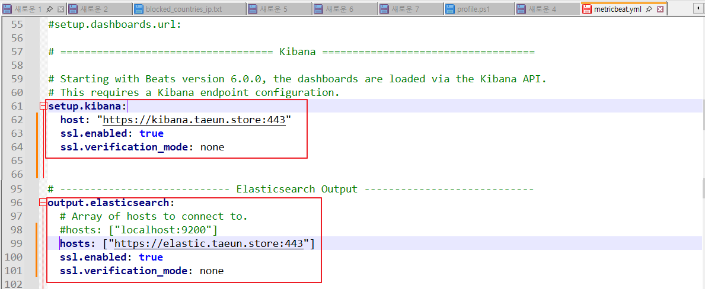
ssl.verification_mode: none은 인증서 검증을 끄는 설정이라 테스트 환경에서만 쓰세요. 운영에서는 ssl.certificate_authorities로 검증하는 구성을 권장합니다.설정 파일을 수정한 뒤 통신을 테스트합니다.
.\metricbeat.exe test output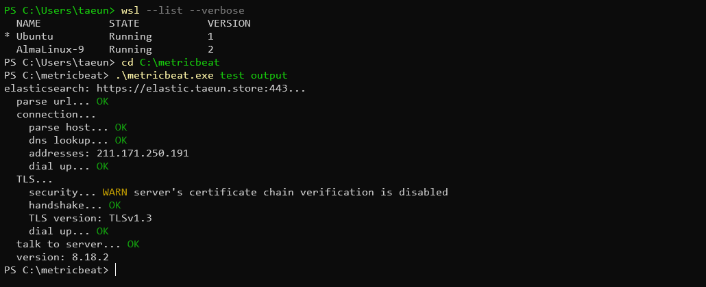
서비스로 등록합니다.
.\install-service-metricbeat.ps1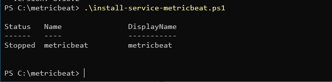
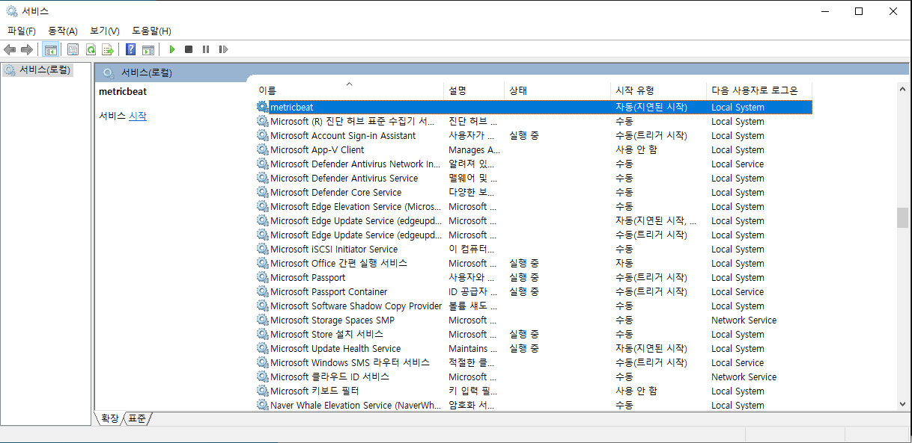
4. Elasticsearch, Kibana, Metricbeat 테스트
Elasticsearch 확인
curl -X GET "https://elastic.example.com"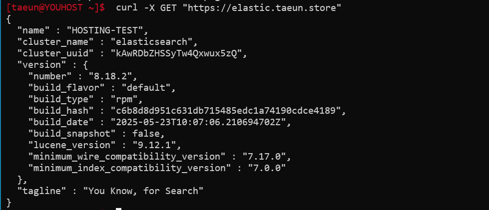
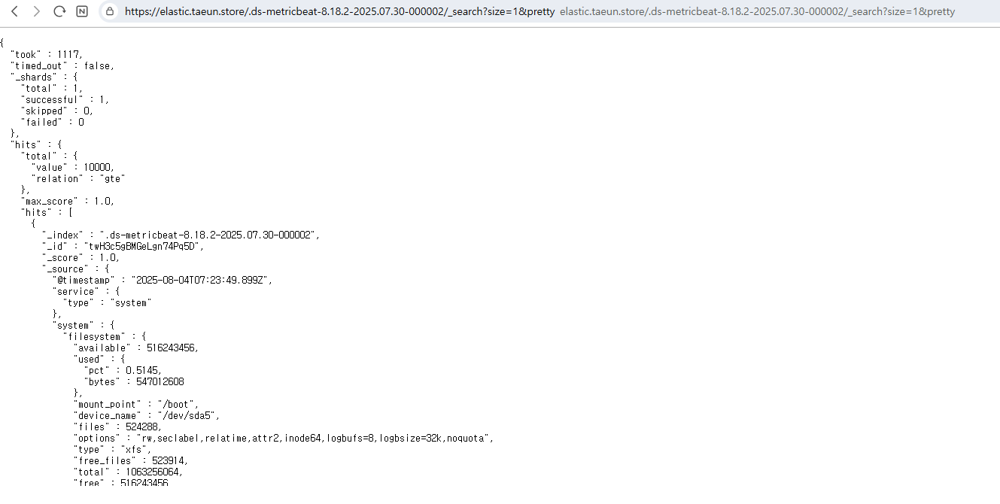
Metricbeat 확인
metricbeat test output
metricbeat test output -e # 상세 로그 확인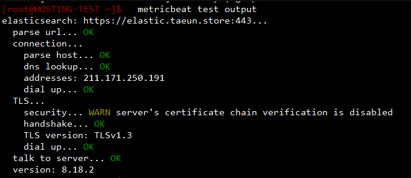
Kibana 접속 및 데이터 확인
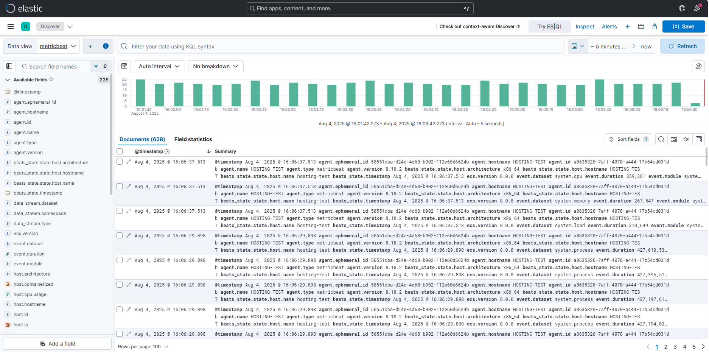
5. Kibana 대시보드 설정
대시보드 설정은 Metricbeat를 통해 이루어지며, /etc/metricbeat/metricbeat.yml의 setup.kibana 항목을 사용합니다.
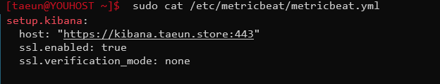
대시보드 일괄 생성
metricbeat setup --dashboards모든 모듈을 로드해 약 80여 개의 대시보드가 생성됩니다.
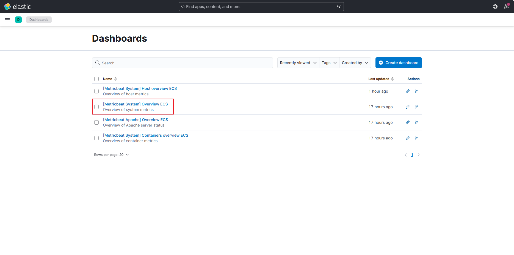
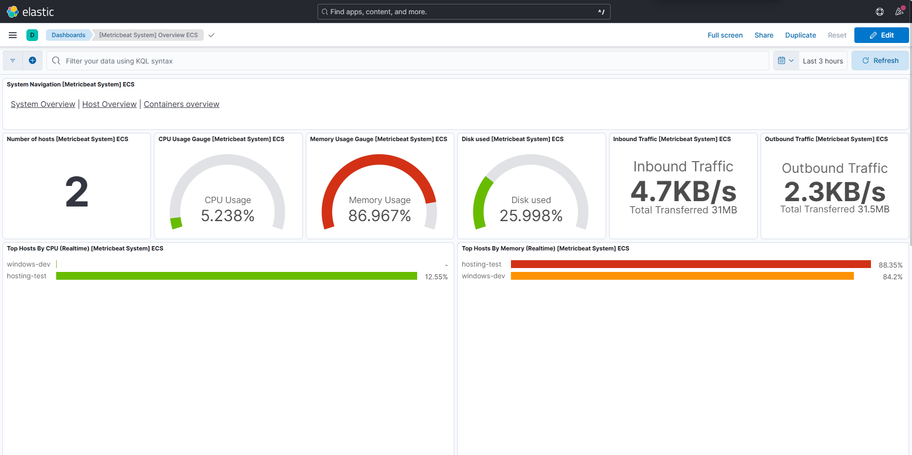
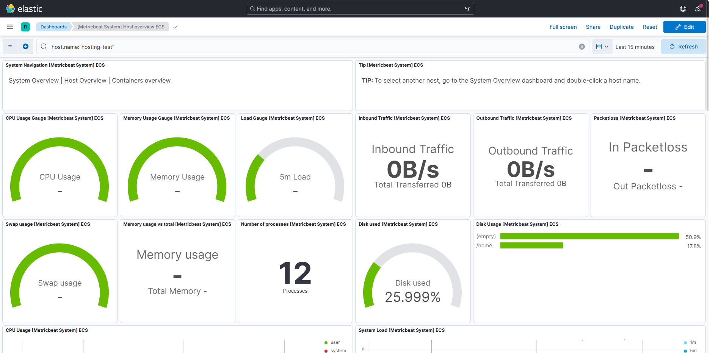
JSON으로 수동 대시보드 가져오기
JSON 파일 안의 title을 확인한 뒤 해당 모듈을 활성화합니다.
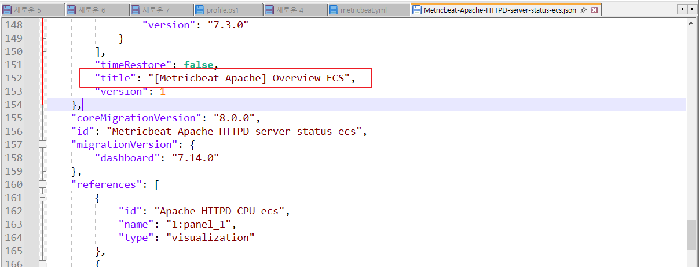
/etc/metricbeat/modules.d/apache.yml
- module: apache
metricsets: ["status"]
enabled: true # 반드시 true
period: 10s
hosts: ["http://127.0.0.1"]이후 Kibana에서 Stack Management → Saved Objects → Import 순서로 JSON을 가져옵니다.
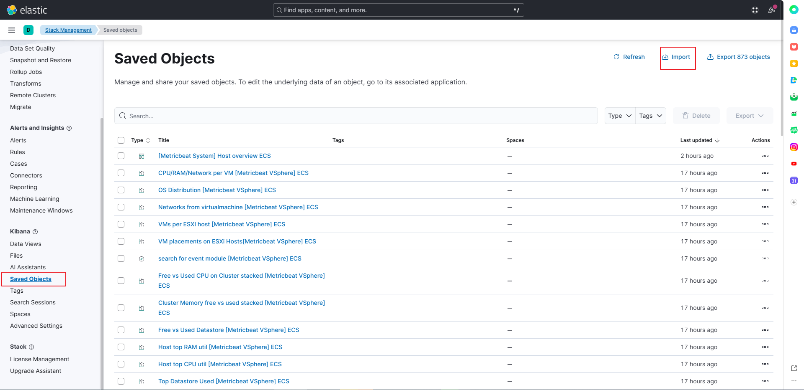